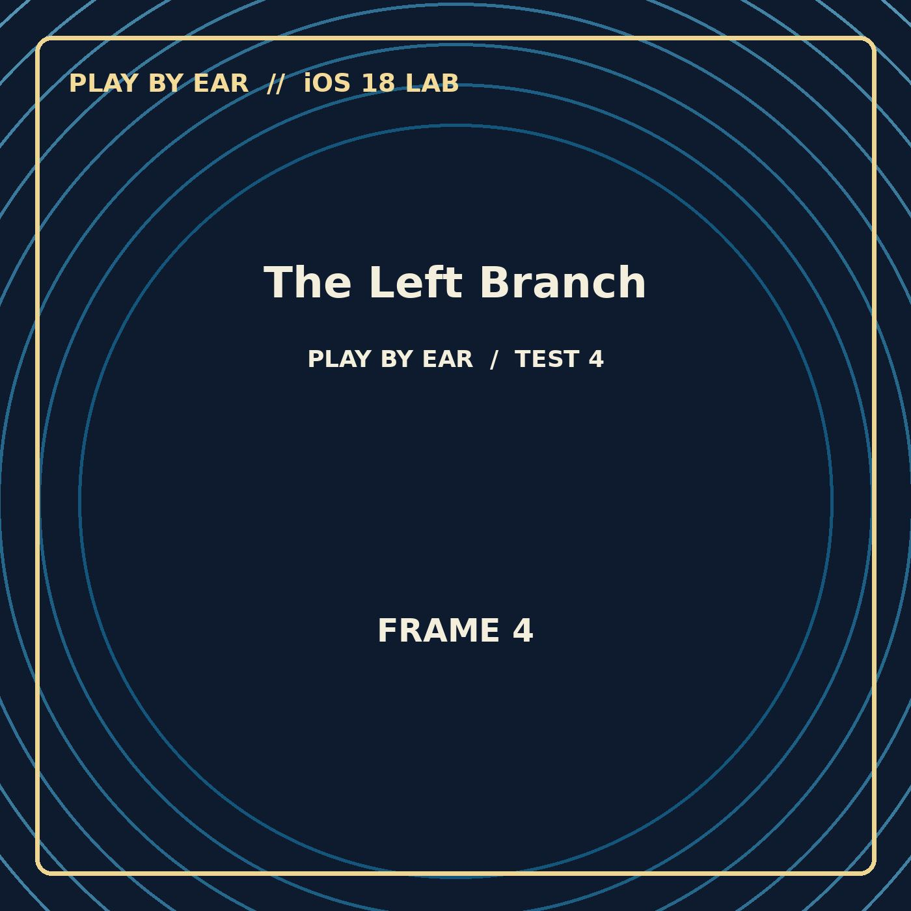

PODCAST EXPERIMENT · 1:13
The Left Branch
Alternate destination from The Forked Transmission. Left-side branch episode. Open this episode page To jump to a chapter: open Now Playing, tap the chapter/list button, and select a…
For full testing, listen in the Apple Podcasts iOS app. This browser player is a fallback.
Chapter navigation (titles and times only)
Select a chapter to seek within the webpage's audio player. This is a browser test, separate from Apple Podcasts' native chapters.
Technical information
Each episode may contain embedded ID3 chapter artwork, alternate left/right stereo information, timestamps, or QR artwork. Apple Podcasts can behave differently from Safari or other podcast apps.
Use a second device to scan on-screen QR codes. If the destination changes, note whether you saw Safari or Apple Podcasts.